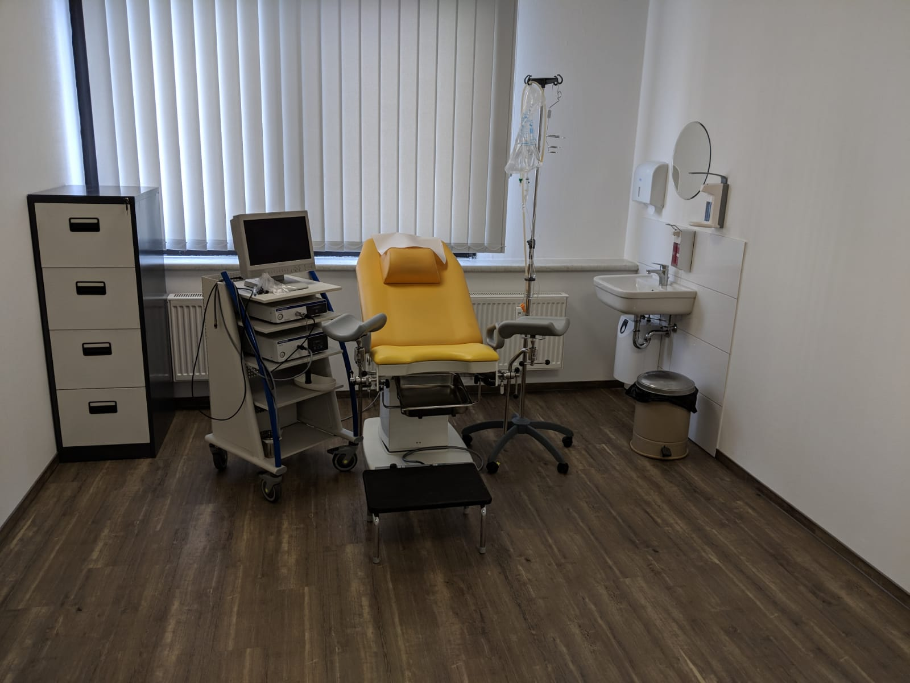

{kind=link}
Die männliche Unfruchtbarkeit
Lieber Patient !
Die Abklärung der männlichen Fruchtbarkeit gehört zu meiner Tätigkeit als Androloge und stellt einen der Hauptschwerpunkte in meiner Praxis dar.
In Deutschland ist fast jede sechste Ehe ungewollt kinderlos. Die Ursache für die Unfruchtbarkeit liegt in etwa 30% der Fälle beim Mann und ebenfalls in 30% der Fälle bei der Frau. In weiteren 30% liegen die Ursachen bei Beiden und in 10% bleibt die Ursache ungeklärt.
Diagnostische Untersuchungen erweisen sich als sehr erfolgreich bei der Abklärung der Ursachen für das Problem, es gibt für viele Störungen Behandlungsmöglichkeiten.
Leider bleiben rund 4% der betroffenen Paare trotzt modernen Therapieoptionen weiterhin ungewollt kinderlos. Zu den häufigsten Ursachen für die männliche Unfruchtbarkeit gehören unter anderen eine von der Norm abweichende Samenqualität sowie Probleme bei dem Samenerguss. Außedem könnte eine Störung der Hormonproduktion zur Grunde liegen. Unsere Praxis verfügt über ein modernes andrologischen Labor, wo die Samenqualität nach den aktuellsten WHO Richtlinien untersucht wird.
Wie verläuft die Untersuchung zur Abklärung der Zeugungsunfähigkeit?
Für die Männer ist der Weg zum Urologen immer noch ungewohnt. Frauen fällt es einfacher und leichter, speziell wegen der bestehenden Kinderlosigkeit einen Arzt aufzusuchen. Damit Sie also nicht ganz unvorbereitet zum Facharzt gehen, möchten wir Ihnen einige Hilfestellungen geben, um Ihnen den Weg ein wenig leichter zu machen:
- Erster Schritt: Die körperliche Untersuchung, vor allem im Genitalbereich
- Zweiter Schritt: Eine Ultraschalluntersuchung, vor allem zur Bestimmung der Hodengröße
- Dritter Schritt: Spermauntersuchung (Die Samenuntersuchung stellt die zentrale Rolle bei der Abklärung der männlichen Unfruchtbarkeit).
Dafür wird eine Samenprobe benötigt. Vier bis fünf Tage davor sollten Sie mit Ihrer Partnerin nicht geschlafen haben, oder masturbiert haben. Der Samen muss frisch sein, deshalb ist es am besten, wenn Sie gleich in der Praxis in ein Auffanggefäß masturbieren. Sicher ist es nicht leicht, das auf Kommando zu tun, und gelegentlich klappt es auch einfach nicht. Keine Sorge, nehmen Sie sich ruhig Zeit. Und wenn es Ihnen heute nicht gelingt, dann eben am nächsten Tag. Ansonsten können Sie Ihren Samen auch zuhause gewinnen, wenn Sie in der Nähe der Praxis wohnen. - Vierter Schritt: Nach den Ergebnissen der oben genannten Untersuchungen ist es möglich, dass eine Hormonanalyse durch Blutentnahme notwendig ist. Ganz wichtig sei zu erwähnen, dass die urologische Untersuchung einige Zeit dauern können, wenn die Ursache einer Störung nicht sofort zu erkennen ist. Manchmal sind Doppeluntersuchungen nicht zu vermeiden. Die verschiedenen Untersuchugen bei Ihrer Frau können auch einige Zeit dauern.
Deswegen möchte ich sie bitten: Seien Sie nicht ungeduldig.